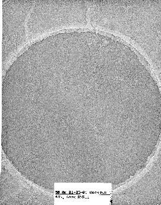
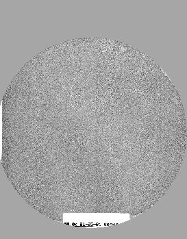

Micrographs with Quantifoil grids have round holes surrounded by the grid background. There may be particles in the background area, but only particles inside the hole should be selected.
These procedure files apply a circular mask to these images to
eliminate the surrounding background:
cmask.spi
cmfull.spi
| Micrograph | after cmask.bat |
|---|---|
|  |  |
Back to Single Particle Reconstruction
Source: quantifoil.html Created: 5/31/01 Bill Baxter